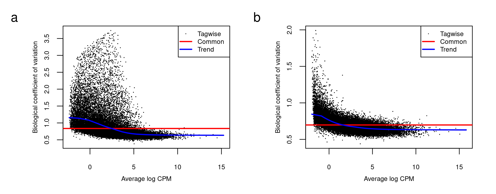
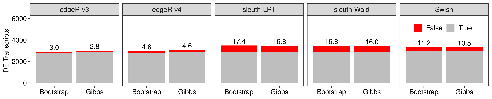
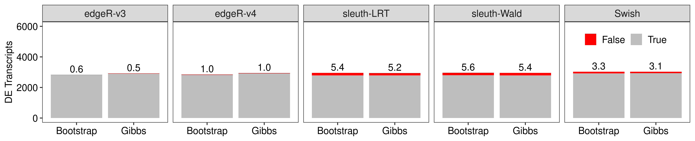
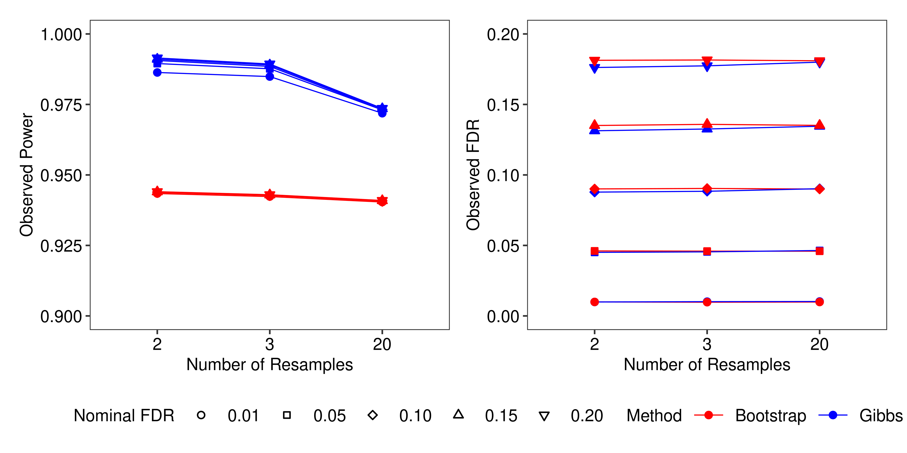
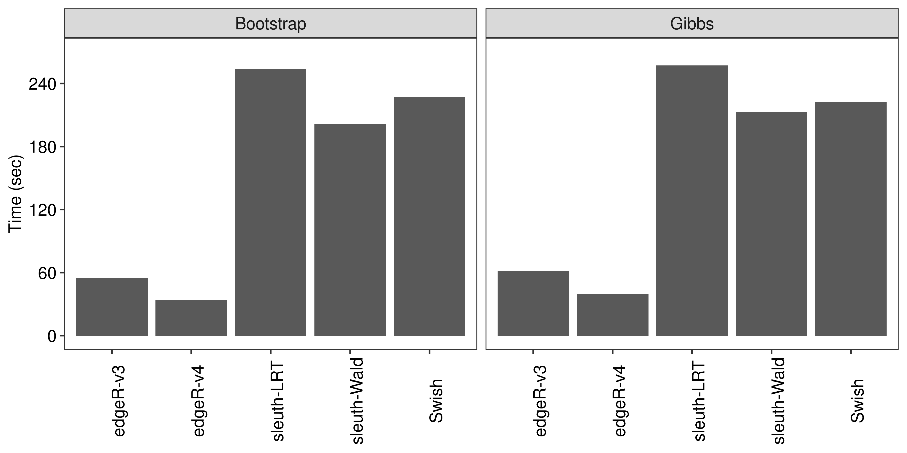
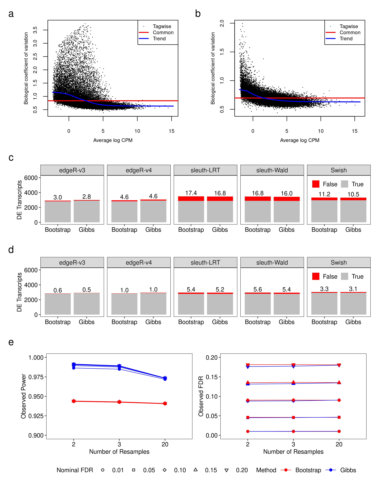

Last updated: 2024-10-09
Checks: 7 0
Knit directory: GibbsDTE-code/analysis/
This reproducible R Markdown analysis was created with workflowr (version 1.7.1). The Checks tab describes the reproducibility checks that were applied when the results were created. The Past versions tab lists the development history.
Great! Since the R Markdown file has been committed to the Git repository, you know the exact version of the code that produced these results.
Great job! The global environment was empty. Objects defined in the global environment can affect the analysis in your R Markdown file in unknown ways. For reproduciblity it’s best to always run the code in an empty environment.
The command set.seed(20231211) was run prior to running
the code in the R Markdown file. Setting a seed ensures that any results
that rely on randomness, e.g. subsampling or permutations, are
reproducible.
Great job! Recording the operating system, R version, and package versions is critical for reproducibility.
Nice! There were no cached chunks for this analysis, so you can be confident that you successfully produced the results during this run.
Great job! Using relative paths to the files within your workflowr project makes it easier to run your code on other machines.
Great! You are using Git for version control. Tracking code development and connecting the code version to the results is critical for reproducibility.
The results in this page were generated with repository version 529139f. See the Past versions tab to see a history of the changes made to the R Markdown and HTML files.
Note that you need to be careful to ensure that all relevant files for
the analysis have been committed to Git prior to generating the results
(you can use wflow_publish or
wflow_git_commit). workflowr only checks the R Markdown
file, but you know if there are other scripts or data files that it
depends on. Below is the status of the Git repository when the results
were generated:
Ignored files:
Ignored: .Rhistory
Ignored: .Rprofile
Ignored: .Rproj.user/
Ignored: .gitattributes
Ignored: .gitignore
Ignored: GibbsDTE-code.Rproj
Ignored: code/lung/data/slurm-10678225.out
Ignored: code/lung/index-subread/.RData
Ignored: code/lung/index-subread/buildindex.Rout
Ignored: code/lung/index-subread/slurm-15397947.out
Ignored: code/lung/index-subread/slurm-15397948.out
Ignored: code/lung/index-subread/slurm-15397949.out
Ignored: code/lung/index/slurm-10679764.out
Ignored: code/lung/index/slurm-10679768.out
Ignored: code/lung/index/slurm-10684814.out
Ignored: code/lung/kallisto/slurm-16121443.out
Ignored: code/lung/salmon/.RData
Ignored: code/lung/salmon/runWasabi.Rout
Ignored: code/lung/salmon/slurm-15257704.out
Ignored: code/lung/salmon/slurm-15397973.out
Ignored: code/lung/salmon/slurm-15887027.out
Ignored: code/lung/subread/.nextflow.log
Ignored: code/lung/subread/.nextflow/
Ignored: code/lung/subread/log/
Ignored: code/lung/subread/report.html
Ignored: code/lung/subread/slurm-15398003.out
Ignored: code/lung/subread/timeline.html
Ignored: code/lung/subread/trace-20240201-45121600.txt
Ignored: code/pkg/.Rbuildignore
Ignored: code/pkg/.Rhistory
Ignored: code/pkg/.Rproj.user/
Ignored: code/pkg/pkg.Rproj
Ignored: code/pkg/src/.gitignore
Ignored: code/pkg/src/RcppExports.o
Ignored: code/pkg/src/pkg.so
Ignored: code/pkg/src/rcpparma_hello_world.o
Ignored: code/simulation/.RData
Ignored: code/simulation/slurm-15466798.out
Ignored: code/simulation/slurm-15466799_1.out
Ignored: code/simulation/slurm-15466799_10.out
Ignored: code/simulation/slurm-15466799_100.out
Ignored: code/simulation/slurm-15466799_101.out
Ignored: code/simulation/slurm-15466799_102.out
Ignored: code/simulation/slurm-15466799_103.out
Ignored: code/simulation/slurm-15466799_104.out
Ignored: code/simulation/slurm-15466799_105.out
Ignored: code/simulation/slurm-15466799_106.out
Ignored: code/simulation/slurm-15466799_107.out
Ignored: code/simulation/slurm-15466799_108.out
Ignored: code/simulation/slurm-15466799_109.out
Ignored: code/simulation/slurm-15466799_11.out
Ignored: code/simulation/slurm-15466799_110.out
Ignored: code/simulation/slurm-15466799_111.out
Ignored: code/simulation/slurm-15466799_112.out
Ignored: code/simulation/slurm-15466799_113.out
Ignored: code/simulation/slurm-15466799_114.out
Ignored: code/simulation/slurm-15466799_115.out
Ignored: code/simulation/slurm-15466799_116.out
Ignored: code/simulation/slurm-15466799_117.out
Ignored: code/simulation/slurm-15466799_118.out
Ignored: code/simulation/slurm-15466799_119.out
Ignored: code/simulation/slurm-15466799_12.out
Ignored: code/simulation/slurm-15466799_120.out
Ignored: code/simulation/slurm-15466799_121.out
Ignored: code/simulation/slurm-15466799_122.out
Ignored: code/simulation/slurm-15466799_123.out
Ignored: code/simulation/slurm-15466799_124.out
Ignored: code/simulation/slurm-15466799_125.out
Ignored: code/simulation/slurm-15466799_126.out
Ignored: code/simulation/slurm-15466799_127.out
Ignored: code/simulation/slurm-15466799_128.out
Ignored: code/simulation/slurm-15466799_129.out
Ignored: code/simulation/slurm-15466799_13.out
Ignored: code/simulation/slurm-15466799_130.out
Ignored: code/simulation/slurm-15466799_131.out
Ignored: code/simulation/slurm-15466799_132.out
Ignored: code/simulation/slurm-15466799_133.out
Ignored: code/simulation/slurm-15466799_134.out
Ignored: code/simulation/slurm-15466799_135.out
Ignored: code/simulation/slurm-15466799_136.out
Ignored: code/simulation/slurm-15466799_137.out
Ignored: code/simulation/slurm-15466799_138.out
Ignored: code/simulation/slurm-15466799_139.out
Ignored: code/simulation/slurm-15466799_14.out
Ignored: code/simulation/slurm-15466799_140.out
Ignored: code/simulation/slurm-15466799_141.out
Ignored: code/simulation/slurm-15466799_142.out
Ignored: code/simulation/slurm-15466799_143.out
Ignored: code/simulation/slurm-15466799_144.out
Ignored: code/simulation/slurm-15466799_145.out
Ignored: code/simulation/slurm-15466799_146.out
Ignored: code/simulation/slurm-15466799_147.out
Ignored: code/simulation/slurm-15466799_148.out
Ignored: code/simulation/slurm-15466799_149.out
Ignored: code/simulation/slurm-15466799_15.out
Ignored: code/simulation/slurm-15466799_150.out
Ignored: code/simulation/slurm-15466799_151.out
Ignored: code/simulation/slurm-15466799_152.out
Ignored: code/simulation/slurm-15466799_153.out
Ignored: code/simulation/slurm-15466799_154.out
Ignored: code/simulation/slurm-15466799_155.out
Ignored: code/simulation/slurm-15466799_156.out
Ignored: code/simulation/slurm-15466799_157.out
Ignored: code/simulation/slurm-15466799_158.out
Ignored: code/simulation/slurm-15466799_159.out
Ignored: code/simulation/slurm-15466799_16.out
Ignored: code/simulation/slurm-15466799_160.out
Ignored: code/simulation/slurm-15466799_161.out
Ignored: code/simulation/slurm-15466799_162.out
Ignored: code/simulation/slurm-15466799_163.out
Ignored: code/simulation/slurm-15466799_164.out
Ignored: code/simulation/slurm-15466799_165.out
Ignored: code/simulation/slurm-15466799_166.out
Ignored: code/simulation/slurm-15466799_167.out
Ignored: code/simulation/slurm-15466799_168.out
Ignored: code/simulation/slurm-15466799_169.out
Ignored: code/simulation/slurm-15466799_17.out
Ignored: code/simulation/slurm-15466799_170.out
Ignored: code/simulation/slurm-15466799_171.out
Ignored: code/simulation/slurm-15466799_172.out
Ignored: code/simulation/slurm-15466799_173.out
Ignored: code/simulation/slurm-15466799_174.out
Ignored: code/simulation/slurm-15466799_175.out
Ignored: code/simulation/slurm-15466799_176.out
Ignored: code/simulation/slurm-15466799_177.out
Ignored: code/simulation/slurm-15466799_178.out
Ignored: code/simulation/slurm-15466799_179.out
Ignored: code/simulation/slurm-15466799_18.out
Ignored: code/simulation/slurm-15466799_180.out
Ignored: code/simulation/slurm-15466799_181.out
Ignored: code/simulation/slurm-15466799_182.out
Ignored: code/simulation/slurm-15466799_183.out
Ignored: code/simulation/slurm-15466799_184.out
Ignored: code/simulation/slurm-15466799_185.out
Ignored: code/simulation/slurm-15466799_186.out
Ignored: code/simulation/slurm-15466799_187.out
Ignored: code/simulation/slurm-15466799_188.out
Ignored: code/simulation/slurm-15466799_189.out
Ignored: code/simulation/slurm-15466799_19.out
Ignored: code/simulation/slurm-15466799_190.out
Ignored: code/simulation/slurm-15466799_191.out
Ignored: code/simulation/slurm-15466799_192.out
Ignored: code/simulation/slurm-15466799_193.out
Ignored: code/simulation/slurm-15466799_194.out
Ignored: code/simulation/slurm-15466799_195.out
Ignored: code/simulation/slurm-15466799_196.out
Ignored: code/simulation/slurm-15466799_197.out
Ignored: code/simulation/slurm-15466799_198.out
Ignored: code/simulation/slurm-15466799_199.out
Ignored: code/simulation/slurm-15466799_2.out
Ignored: code/simulation/slurm-15466799_20.out
Ignored: code/simulation/slurm-15466799_200.out
Ignored: code/simulation/slurm-15466799_21.out
Ignored: code/simulation/slurm-15466799_22.out
Ignored: code/simulation/slurm-15466799_23.out
Ignored: code/simulation/slurm-15466799_24.out
Ignored: code/simulation/slurm-15466799_25.out
Ignored: code/simulation/slurm-15466799_26.out
Ignored: code/simulation/slurm-15466799_27.out
Ignored: code/simulation/slurm-15466799_28.out
Ignored: code/simulation/slurm-15466799_29.out
Ignored: code/simulation/slurm-15466799_3.out
Ignored: code/simulation/slurm-15466799_30.out
Ignored: code/simulation/slurm-15466799_31.out
Ignored: code/simulation/slurm-15466799_32.out
Ignored: code/simulation/slurm-15466799_33.out
Ignored: code/simulation/slurm-15466799_34.out
Ignored: code/simulation/slurm-15466799_35.out
Ignored: code/simulation/slurm-15466799_36.out
Ignored: code/simulation/slurm-15466799_37.out
Ignored: code/simulation/slurm-15466799_38.out
Ignored: code/simulation/slurm-15466799_39.out
Ignored: code/simulation/slurm-15466799_4.out
Ignored: code/simulation/slurm-15466799_40.out
Ignored: code/simulation/slurm-15466799_41.out
Ignored: code/simulation/slurm-15466799_42.out
Ignored: code/simulation/slurm-15466799_43.out
Ignored: code/simulation/slurm-15466799_44.out
Ignored: code/simulation/slurm-15466799_45.out
Ignored: code/simulation/slurm-15466799_46.out
Ignored: code/simulation/slurm-15466799_47.out
Ignored: code/simulation/slurm-15466799_48.out
Ignored: code/simulation/slurm-15466799_49.out
Ignored: code/simulation/slurm-15466799_5.out
Ignored: code/simulation/slurm-15466799_50.out
Ignored: code/simulation/slurm-15466799_51.out
Ignored: code/simulation/slurm-15466799_52.out
Ignored: code/simulation/slurm-15466799_53.out
Ignored: code/simulation/slurm-15466799_54.out
Ignored: code/simulation/slurm-15466799_55.out
Ignored: code/simulation/slurm-15466799_56.out
Ignored: code/simulation/slurm-15466799_57.out
Ignored: code/simulation/slurm-15466799_58.out
Ignored: code/simulation/slurm-15466799_59.out
Ignored: code/simulation/slurm-15466799_6.out
Ignored: code/simulation/slurm-15466799_60.out
Ignored: code/simulation/slurm-15466799_61.out
Ignored: code/simulation/slurm-15466799_62.out
Ignored: code/simulation/slurm-15466799_63.out
Ignored: code/simulation/slurm-15466799_64.out
Ignored: code/simulation/slurm-15466799_65.out
Ignored: code/simulation/slurm-15466799_66.out
Ignored: code/simulation/slurm-15466799_67.out
Ignored: code/simulation/slurm-15466799_68.out
Ignored: code/simulation/slurm-15466799_69.out
Ignored: code/simulation/slurm-15466799_7.out
Ignored: code/simulation/slurm-15466799_70.out
Ignored: code/simulation/slurm-15466799_71.out
Ignored: code/simulation/slurm-15466799_72.out
Ignored: code/simulation/slurm-15466799_73.out
Ignored: code/simulation/slurm-15466799_74.out
Ignored: code/simulation/slurm-15466799_75.out
Ignored: code/simulation/slurm-15466799_76.out
Ignored: code/simulation/slurm-15466799_77.out
Ignored: code/simulation/slurm-15466799_78.out
Ignored: code/simulation/slurm-15466799_79.out
Ignored: code/simulation/slurm-15466799_8.out
Ignored: code/simulation/slurm-15466799_80.out
Ignored: code/simulation/slurm-15466799_81.out
Ignored: code/simulation/slurm-15466799_82.out
Ignored: code/simulation/slurm-15466799_83.out
Ignored: code/simulation/slurm-15466799_84.out
Ignored: code/simulation/slurm-15466799_85.out
Ignored: code/simulation/slurm-15466799_86.out
Ignored: code/simulation/slurm-15466799_87.out
Ignored: code/simulation/slurm-15466799_88.out
Ignored: code/simulation/slurm-15466799_89.out
Ignored: code/simulation/slurm-15466799_9.out
Ignored: code/simulation/slurm-15466799_90.out
Ignored: code/simulation/slurm-15466799_91.out
Ignored: code/simulation/slurm-15466799_92.out
Ignored: code/simulation/slurm-15466799_93.out
Ignored: code/simulation/slurm-15466799_94.out
Ignored: code/simulation/slurm-15466799_95.out
Ignored: code/simulation/slurm-15466799_96.out
Ignored: code/simulation/slurm-15466799_97.out
Ignored: code/simulation/slurm-15466799_98.out
Ignored: code/simulation/slurm-15466799_99.out
Ignored: code/simulation/slurm-15478249_201.out
Ignored: code/simulation/slurm-15478249_202.out
Ignored: code/simulation/slurm-15478249_203.out
Ignored: code/simulation/slurm-15478249_204.out
Ignored: code/simulation/slurm-15478249_205.out
Ignored: code/simulation/slurm-15478249_206.out
Ignored: code/simulation/slurm-15478249_207.out
Ignored: code/simulation/slurm-15478249_208.out
Ignored: code/simulation/slurm-15478249_209.out
Ignored: code/simulation/slurm-15478249_210.out
Ignored: code/simulation/slurm-15478249_211.out
Ignored: code/simulation/slurm-15478249_212.out
Ignored: code/simulation/slurm-15478249_213.out
Ignored: code/simulation/slurm-15478249_214.out
Ignored: code/simulation/slurm-15478249_215.out
Ignored: code/simulation/slurm-15478249_216.out
Ignored: code/simulation/slurm-15478249_217.out
Ignored: code/simulation/slurm-15478249_218.out
Ignored: code/simulation/slurm-15478249_219.out
Ignored: code/simulation/slurm-15478249_220.out
Ignored: code/simulation/slurm-15478249_221.out
Ignored: code/simulation/slurm-15478249_222.out
Ignored: code/simulation/slurm-15478249_223.out
Ignored: code/simulation/slurm-15478249_224.out
Ignored: code/simulation/slurm-15478249_225.out
Ignored: code/simulation/slurm-15478249_226.out
Ignored: code/simulation/slurm-15478249_227.out
Ignored: code/simulation/slurm-15478249_228.out
Ignored: code/simulation/slurm-15478249_229.out
Ignored: code/simulation/slurm-15478249_230.out
Ignored: code/simulation/slurm-15478249_231.out
Ignored: code/simulation/slurm-15478249_232.out
Ignored: code/simulation/slurm-15478249_233.out
Ignored: code/simulation/slurm-15478249_234.out
Ignored: code/simulation/slurm-15478249_235.out
Ignored: code/simulation/slurm-15478249_236.out
Ignored: code/simulation/slurm-15478249_237.out
Ignored: code/simulation/slurm-15478249_238.out
Ignored: code/simulation/slurm-15478249_239.out
Ignored: code/simulation/slurm-15478249_240.out
Ignored: code/simulation/slurm-15530400.out
Ignored: code/simulation/summarize.Rout
Ignored: data/annotation/hg38/gencode.v33.annotation.gtf.gz
Ignored: data/annotation/mm39/
Ignored: data/lung-ont/220928_dge.rds
Ignored: data/lung/fastq/
Ignored: data/lung/index-kallisto/
Ignored: data/lung/index-subread/
Ignored: data/lung/index/
Ignored: ignore/
Ignored: misc/
Ignored: output/lung/
Ignored: output/simulation/
Untracked files:
Untracked: code/simulation-large/
Untracked: output/simulation-large/
Untracked: renv.lock
Untracked: renv/
Unstaged changes:
Modified: code/pkg/R/simulation-quant.R
Modified: code/pkg/R/simulation-summary.R
Modified: code/pkg/R/simulation-utils.R
Modified: code/pkg/R/simulation.R
Note that any generated files, e.g. HTML, png, CSS, etc., are not included in this status report because it is ok for generated content to have uncommitted changes.
These are the previous versions of the repository in which changes were
made to the R Markdown (analysis/simulation-large-supp.Rmd)
and HTML (docs/simulation-large-supp.html) files. If you’ve
configured a remote Git repository (see ?wflow_git_remote),
click on the hyperlinks in the table below to view the files as they
were in that past version.
| File | Version | Author | Date | Message |
|---|---|---|---|---|
| Rmd | 529139f | Pedro Baldoni | 2024-10-09 | NARGAB Revision from October 2024 |
This Rmarkdown generates Supplementary Figures S11 and S12 from our Gibbs DTE paper. The results are based on the simulation designed to emulate large-scale experiments with large biological variation and sample size, a typical scenario of observational RNA-seq studies with human subjects.
Below we set options for this Rmarkdown report and load the necessary libraries.
knitr::opts_chunk$set(dev = "png",
dpi = 300,
dev.args = list(type = "cairo-png"),
root.dir = '.',
autodep = TRUE)
options(knitr.kable.NA = "-")
bs <- 8library(data.table)
library(magrittr)
library(ggplot2)
library(patchwork)
library(plyr)
library(edgeR)
library(png)
library(kableExtra)
devtools::load_all('../code/pkg')Next we set the paths to our simulation results.
path.misc <- file.path('../misc/simulation-large-supp.Rmd')
dir.create(path.misc,recursive = TRUE,showWarnings = FALSE)
path.example <- "../output/simulation-large/data/mm39/readlen-100/fc2/paired-end/9999TxPerGene/unbalanced/100libsPerGroup/simulation-1"
path.fdr <-
list.files('../output/simulation-large/summary','fdr.tsv.gz',recursive = TRUE,full.names = TRUE)
path.metrics <-
list.files('../output/simulation-large/summary','metrics.tsv.gz',recursive = TRUE,full.names = TRUE)
path.metrics.1pct <-
list.files('../output/simulation-large/summary','metrics.1pct.tsv.gz',recursive = TRUE,full.names = TRUE)
path.time <-
list.files('../output/simulation-large/summary','^time.tsv.gz',recursive = TRUE,full.names = TRUE)
path.quanttime <-
list.files('../output/simulation-large/summary','quanttime.tsv.gz',recursive = TRUE,full.names = TRUE)
path.quantile <-
list.files('../output/simulation-large/summary','quantile.tsv.gz',recursive = TRUE,full.names = TRUE)
path.pvalue <-
list.files('../output/simulation-large/summary','pvalue.tsv.gz',recursive = TRUE,full.names = TRUE)
path.overdispersion <-
list.files('../output/simulation-large/summary','overdispersion.tsv.gz',recursive = TRUE,full.names = TRUE)
path.roc <-
list.files('../output/simulation-large/summary','roc.tsv.gz',recursive = TRUE,full.names = TRUE)Below we load the actual results and relabel some of the factor variables.
relabel <- function(x){
y <- copy(x)
y$TxPerGene %<>% factor(levels = paste0(c(2, 3, 4, 5, 9999), 'TxPerGene'),labels = c(paste0("#Tx/Gene = ", c(2, 3, 4, 5)), 'All Transcripts')) %<>% droplevels()
y$LibsPerGroup %<>% factor(levels = paste0(c(3, 5, 10,100), 'libsPerGroup'),labels = paste0('#Lib/Group = ', c(3, 5, 10,100))) %<>% droplevels()
y$Quantifier %<>% factor(levels = c('salmon','salmon-gibbs','kallisto'),labels = c('Salmon-Boot','Salmon-Gibbs','kallisto')) %<>% droplevels()
y$Length %<>% factor(levels = paste0('readlen-', seq(50, 150, 25)),labels = paste0(seq(50, 150, 25), 'bp')) %<>% droplevels()
if (!is.null(x$Sample)) {
y$Sample %<>% factor(levels = c(paste0("groupA_rep",1:100,"_R1"),paste0("groupB_rep",1:100,"_R1")),labels = c(paste0("A",1:100),paste0("B",1:100))) %<>% droplevels()
}
return(y)
}
# Loading datasets
dt.fdr <- do.call(rbind,lapply(path.fdr,fread)) %>% relabel()
dt.metrics <- do.call(rbind,lapply(path.metrics,fread)) %>% relabel()
dt.metrics.1pct <- do.call(rbind,lapply(path.metrics.1pct,fread)) %>% relabel()
dt.time <- do.call(rbind,lapply(path.time,fread)) %>% relabel()
dt.quanttime <- do.call(rbind,lapply(path.quanttime,fread)) %>% relabel()
dt.quantile <- do.call(rbind,lapply(path.quantile,fread)) %>% relabel()
dt.pvalue <- do.call(rbind,lapply(path.pvalue,fread)) %>% relabel()
dt.overdispersion <- do.call(rbind,lapply(path.overdispersion,fread)) %>% relabel()
dt.roc <- do.call(rbind,lapply(path.roc,fread)) %>% relabel()First we compute the BCV plots from Supplementary Figure S11. These BCV plots are from a single simulated experiment and are shown as an example of the count scaling effect on the estimated BCV coefficients.
quant.gibbs <- list.dirs(file.path(path.example,'quant-salmon-gibbs'),recursive = FALSE,full.names = TRUE)
cs.gibbs <- catchSalmon(quant.gibbs,verbose = FALSE)
group <- strsplit2(basename(colnames(cs.gibbs$counts)),"_")[,1]
design <- model.matrix(~group)
dge.gibbs.raw <- DGEList(counts = cs.gibbs$counts,
group = group,
annotation = cs.gibbs$annotation)
dge.gibbs.raw <- dge.gibbs.raw[filterByExpr(dge.gibbs.raw,design),,keep.lib.sizes = FALSE]
dge.gibbs.raw <- normLibSizes(dge.gibbs.raw)
dge.gibbs.raw <- estimateDisp(dge.gibbs.raw,design = design)
dge.gibbs.scaled <- DGEList(counts = cs.gibbs$counts/cs.gibbs$annotation$Overdispersion,
group = group,
annotation = cs.gibbs$annotation)
dge.gibbs.scaled <- dge.gibbs.scaled[filterByExpr(dge.gibbs.scaled,design),,keep.lib.sizes = FALSE]
dge.gibbs.scaled <- normLibSizes(dge.gibbs.scaled)
dge.gibbs.scaled <- estimateDisp(dge.gibbs.scaled,design = design)
plotBCV2 <- function(y, xlab="Average log CPM", ylab="Biological coefficient of variation", pch=16, cex=0.2, col.common="red", col.trend="blue", col.tagwise="black",fontsize = 8,...)
{
if(!is(y,"DGEList")) stop("y must be a DGEList.")
A <- y$AveLogCPM
if(is.null(A)) A <- aveLogCPM(y$counts, offset=getOffset(y))
disp <- getDispersion(y)
if(is.null(disp)) stop("No dispersions to plot")
if(attr(disp,"type")=="common") disp <- rep_len(disp, length(A))
plot(A, sqrt(disp), xlab=xlab, ylab=ylab, type="n", cex.lab = fontsize/12,
cex.axis = fontsize/12,...)
labels <- cols <- lty <- pt <- NULL
if(!is.null(y$tagwise.dispersion)) {
points(A, sqrt(y$tagwise.dispersion), pch=pch, cex=cex, col=col.tagwise)
labels <- c(labels, "Tagwise")
cols <- c(cols, col.tagwise)
lty <- c(lty, -1)
pt <- c(pt, pch)
}
if(!is.null(y$common.dispersion)) {
abline(h=sqrt(y$common.dispersion), col=col.common, lwd=2)
labels <- c(labels, "Common")
cols <- c(cols, col.common)
lty <- c(lty, 1)
pt <- c(pt, -1)
}
if(!is.null(y$trended.dispersion)) {
o <- order(A)
lines(A[o], sqrt(y$trended.dispersion)[o], col=col.trend, lwd=2)
labels <- c(labels, "Trend")
cols <- c(cols, col.trend)
lty <- c(lty, 1)
pt <- c(pt, -1)
}
legend("topright", legend=labels, lty=lty, pch=pt, pt.cex=cex, lwd=2, col=cols,cex = fontsize/12)
invisible()
}
fig.bcv.raw <- wrap_elements(full = ~ plotBCV2(dge.gibbs.raw))
fig.bcv.scaled <- wrap_elements(full = ~ plotBCV2(dge.gibbs.scaled))
file.raw <- tempfile("raw",fileext = '.png')
png(file.raw,width = 3.5,height = 2.75,units = 'in',res = 300)
par(mar = c(3, 3, 0.25, 0.25),mgp = c(2,1,0))
fig.bcv.raw
dev.off()png
2 fig.bcv.raw <- readPNG(file.raw, native = TRUE)
file.scaled <- tempfile("scaled",fileext = '.png')
png(file.scaled,width = 3.5,height = 2.75,units = 'in',res = 300)
par(mar = c(3, 3, 0.25, 0.25),mgp = c(2,1,0))
fig.bcv.scaled
dev.off()png
2 fig.bcv.scaled <- readPNG(file.scaled, native = TRUE)
wrap_plots(A = wrap_elements(fig.bcv.raw),
B = wrap_elements(fig.bcv.scaled),
design = c(area(1,1),area(1,2))) +
plot_annotation(tag_levels = 'a',theme = theme(plot.tag = element_text(size = bs)))
Below I compute the barplots of Supplementary Figure S11. Panel (c) reports the observed power and FDR under a nominal FDR threshold of 0.05.
dt.power <- dt.metrics[FC == 'fc2' &
Quantifier != 'kallisto' &
!grepl("\\.n|RC",Method) &
Scenario == 'unbalanced',]
dt.power$LibsPerGroup %<>% factor(levels = paste0('#Lib/Group = ', c(3, 5,10,100)),labels = paste0(c(3,5,10,100),' samples per group'))
dt.power$Scenario %<>% factor(levels = c('balanced','unbalanced'),labels = c('Equal library sizes','Unequal library sizes'))
dt.power$Quantifier %<>% factor(levels = c('Salmon-Boot','Salmon-Gibbs'),labels = c('Bootstrap','Gibbs'))
dt.power$Method %<>% mapvalues(from = c('edgeR-SC','edgeR.legacy-SC'),to = c('edgeR-v4','edgeR-v3'))
dt.power[, FDR := roundPretty(ifelse((FP+TP) == 0,NA,100*FP/(FP+TP)),1)]
x.melt <- melt(dt.power,id.vars = colnames(dt.power)[-which(colnames(dt.power) %in% c('P.SIG','TP','FP'))],
measure.vars = c('TP','FP'),
variable.name = 'Type',
value.name = 'Value')
x.melt$Type <-
factor(x.melt$Type,
levels = c('FP','TP'),
labels = c('False','True'))
plot.power <- function(df.bar,df.txt,scenario,library,legend = FALSE, base_size = bs){
tb.bar <- df.bar[Scenario == scenario & LibsPerGroup == library,]
tb.txt <- df.txt[Scenario == scenario & LibsPerGroup == library,][FDR != 'NA',]
gap <- 0.05*max(dt.power$TP + dt.power$FP)
ggplot(tb.bar,aes(x = Quantifier,y = Value,fill = Type)) +
facet_wrap(facets = "Method",nrow = 1) +
geom_col() +
geom_text(aes(x = Quantifier,y = (TP + FP) + gap,label = FDR),
vjust = 0,data = tb.txt,size = base_size/.pt,inherit.aes = FALSE) +
scale_fill_manual(values = c('#ff0000','#bebebe')) +
labs(x = NULL,y = paste('DE Transcripts')) +
scale_y_continuous(limits = c(0,6000)) +
theme_bw(base_size = base_size,base_family = 'sans') +
theme(panel.grid = element_blank(),
# axis.text.x = element_text(angle = 90),
axis.text = element_text(colour = 'black',size = base_size),
strip.text = element_text(size = base_size)) +
if (legend == TRUE) theme(legend.background = element_rect(fill = alpha('white', 0)),
legend.text = element_text(size = base_size),
legend.position.inside = c(0.9,0.825),
legend.position = 'inside',
legend.direction = 'horizontal',
legend.title = element_blank(),
legend.key.size = unit(0.75,"line")) else theme(legend.position = 'none')
}
fig.power <- plot.power(df.bar = x.melt,
df.txt = dt.power,
scenario = 'Unequal library sizes',
library = '100 samples per group',
legend = TRUE)
fig.power
Analogously, we create panel (d), which reports the observed power and FDR under a nominal FDR threshold of 0.01.
dt.power.1pct <- dt.metrics.1pct[FC == 'fc2' &
Quantifier != 'kallisto' &
!grepl("\\.n|RC",Method) &
Scenario == 'unbalanced',]
dt.power.1pct$LibsPerGroup %<>% factor(levels = paste0('#Lib/Group = ', c(3, 5,10,100)),labels = paste0(c(3,5,10,100),' samples per group'))
dt.power.1pct$Scenario %<>% factor(levels = c('balanced','unbalanced'),labels = c('Equal library sizes','Unequal library sizes'))
dt.power.1pct$Quantifier %<>% factor(levels = c('Salmon-Boot','Salmon-Gibbs'),labels = c('Bootstrap','Gibbs'))
dt.power.1pct$Method %<>% mapvalues(from = c('edgeR-SC','edgeR.legacy-SC'),to = c('edgeR-v4','edgeR-v3'))
dt.power.1pct[, FDR := roundPretty(ifelse((FP+TP) == 0,NA,100*FP/(FP+TP)),1)]
x.melt.1pct <- melt(dt.power.1pct,id.vars = colnames(dt.power.1pct)[-which(colnames(dt.power.1pct) %in% c('P.SIG','TP','FP'))],
measure.vars = c('TP','FP'),
variable.name = 'Type',
value.name = 'Value')
x.melt.1pct$Type <-
factor(x.melt.1pct$Type,
levels = c('FP','TP'),
labels = c('False','True'))
plot.power <- function(df.bar,df.txt,scenario,library,legend = FALSE, base_size = bs){
tb.bar <- df.bar[Scenario == scenario & LibsPerGroup == library,]
tb.txt <- df.txt[Scenario == scenario & LibsPerGroup == library,][FDR != 'NA',]
gap <- 0.05*max(dt.power.1pct$TP + dt.power.1pct$FP)
ggplot(tb.bar,aes(x = Quantifier,y = Value,fill = Type)) +
facet_wrap(facets = "Method",nrow = 1) +
geom_col() +
geom_text(aes(x = Quantifier,y = (TP + FP) + gap,label = FDR),
vjust = 0,data = tb.txt,size = base_size/.pt,inherit.aes = FALSE) +
scale_fill_manual(values = c('#ff0000','#bebebe')) +
labs(x = NULL,y = paste('DE Transcripts')) +
scale_y_continuous(limits = c(0,6000)) +
theme_bw(base_size = base_size,base_family = 'sans') +
theme(panel.grid = element_blank(),
# axis.text.x = element_text(angle = 90),
axis.text = element_text(colour = 'black',size = base_size),
strip.text = element_text(size = base_size)) +
if (legend == TRUE) theme(legend.background = element_rect(fill = alpha('white', 0)),
legend.text = element_text(size = base_size),
legend.position.inside = c(0.9,0.825),
legend.position = 'inside',
legend.direction = 'horizontal',
legend.title = element_blank(),
legend.key.size = unit(0.75,"line")) else theme(legend.position = 'none')
}
fig.power.1pct <- plot.power(df.bar = x.melt.1pct,
df.txt = dt.power.1pct,
scenario = 'Unequal library sizes',
library = '100 samples per group',
legend = TRUE)
fig.power.1pct
Below I generate the plots showing observed power and FDR under different nominal FDR threshold values and number of resamples. This is panel (e) from Supplementary Figure S11.
dt.rcurve <- dt.roc[FC == 'fc2' &
grepl("edgeR-SC|edgeR-SC\\.n",Method) &
Scenario == 'unbalanced' &
Quantifier != 'kallisto',]
dt.rcurve$LibsPerGroup %<>% factor(levels = paste0('#Lib/Group = ', c(3, 5, 10,100)),labels = paste0(c('Three','Five', 'Ten','Hundred'),' samples per group'))
dt.rcurve$Scenario %<>% factor(levels = c('balanced','unbalanced'),labels = c('Equal library sizes','Unequal library sizes'))
dt.rcurve$Quantifier %<>% factor(levels = c('Salmon-Boot','Salmon-Gibbs'),labels = c('Bootstrap','Gibbs'))
dt.rcurve$Method %<>%
factor(levels = c(paste0('edgeR-SC.n',c(2,3)),'edgeR-SC')) %<>%
mapvalues(from = c(paste0('edgeR-SC.n',c(2,3)),'edgeR-SC'),to = paste0(c(2,3,20)))
dt.rcurve.long <- melt(dt.rcurve,
id.vars = c('Genome','Length','FC','Reads','TxPerGene','Scenario','LibsPerGroup','Quantifier','Method','nFDR'),
measure.vars = c('oTPR','oFDR'),
variable.name = 'Type',
value.name = 'Value')
foo <- function(x,lib,type,ylab,title = NULL,base_size = bs,legend = TRUE,...){
sub.x <- x[LibsPerGroup == lib & Type == type,]
sub.x$nFDR_char <- roundPretty(sub.x$nFDR,digits = 2)
sub.x$nFDR_char %<>% factor(levels = c('0.01','0.05','0.10','0.15','0.20'))
shape <- 21:25
names(shape) <- c('0.01','0.05','0.10','0.15','0.20')
p <- ggplot(data = sub.x, aes(x = Method,y = Value,group = interaction(nFDR_char,Quantifier))) +
geom_line(aes(color = Quantifier),linewidth = 0.25) +
geom_point(aes(shape = nFDR_char,color = Quantifier,fill = Quantifier),size = 1.25) +
theme_bw(base_size = bs,base_family = 'sans') +
scale_color_manual(values = c('Bootstrap' = 'red','Gibbs' = 'blue')) +
scale_fill_manual(values = c('Bootstrap' = 'red','Gibbs' = 'blue'),guide = "none") +
scale_shape_manual(values = shape) +
coord_cartesian(...) +
theme(panel.grid = element_blank(),
plot.title = element_text(hjust = 0.5,size = base_size),
axis.text = element_text(colour = 'black',size = base_size),
strip.text = element_text(colour = 'black',size = base_size)) +
labs(x = 'Number of Resamples',y = ylab,shape = 'Nominal FDR',color = 'Method',title = title) +
if (legend == TRUE) {theme(legend.background = element_rect(fill = alpha('white', 0)),
legend.text = element_text(size = base_size),
legend.title = element_text(size = base_size),
legend.margin = margin(0, 0, 0, 0))} else theme(legend.position = 'none')
p
}
fig.roc.hundred.tpr <- foo(dt.rcurve.long,lib = 'Hundred samples per group',type = 'oTPR',ylab = 'Observed Power',ylim = c(0.9,1))
fig.roc.hundred.fdr <- foo(dt.rcurve.long,lib = 'Hundred samples per group',type = 'oFDR',ylab = 'Observed FDR',ylim = c(0,0.2))
fig.roc <- wrap_plots(A = fig.roc.hundred.tpr,
B = fig.roc.hundred.fdr,
design = c(area(1,1),area(1,2))) +
plot_layout(guides = 'collect') & theme(
legend.position = 'bottom',
legend.direction = 'horizontal')
fig.roc
Finally, the code chunk below generates Supplementary Figure S12.
dt.dte <- merge(x = dt.time[grepl("edgeR-SC$|edgeR.legacy-SC$|sleuth|Swish",Method) &
grepl("Salmon",Quantifier) &
Scenario == 'unbalanced' &
FC == 'fc2',c('LibsPerGroup','Method','Quantifier','Time')],
y = dt.roc[grepl("edgeR-SC$|edgeR.legacy-SC$|sleuth|Swish",Method) &
grepl("Salmon",Quantifier) &
Scenario == 'unbalanced' &
FC == 'fc2' &
nFDR == 0.05,c('LibsPerGroup','Method','Quantifier','oTPR','oFDR')],
by = c('LibsPerGroup','Method','Quantifier'),
all.x = TRUE)
dt.dte[,Time := 60*Time]
dt.dte$LibsPerGroup %<>% factor(levels = paste0('#Lib/Group = ',c(3,5,10,100)),
labels = c('Three','Five','Ten','Hundred'))
dt.dte$Method %<>% factor(levels = c('edgeR.legacy-SC','edgeR-SC','sleuth-LRT','sleuth-Wald','Swish'),
labels = c('edgeR-v3','edgeR-v4','sleuth-LRT','sleuth-Wald','Swish'))
dt.dte$Quantifier %<>% factor(levels = c('Salmon-Boot','Salmon-Gibbs'),
labels = c('Bootstrap','Gibbs'))
fig.time <- ggplot(data = dt.dte,aes(x = Method,y = Time)) +
facet_wrap(facets = 'Quantifier',nrow = 1) +
geom_col() +
coord_cartesian(ylim = c(0,270)) +
scale_y_continuous(breaks = seq(0,300,60)) +
theme_bw(base_size = bs,base_family = 'sans') +
theme(panel.grid = element_blank(),
axis.text.x = element_text(angle = 90),
axis.text = element_text(colour = 'black',size = bs),
strip.text = element_text(size = bs)) +
labs(x = NULL,y = "Time (sec)")
fig.time
In the code chunk below I save the figures in PNG format for the supplement.
dsg.area <- c(area(1,1),area(1,2),
area(2,1,2,2),
area(3,1,3,2),
area(4,1,4,2))
fig.metrics <- wrap_plots(A = wrap_elements(fig.bcv.raw),
B = wrap_elements(fig.bcv.scaled),
C = wrap_elements(fig.power),
D = wrap_elements(fig.power.1pct),
E = wrap_elements(fig.roc),
design = dsg.area,
heights = c(2.75,1.625,1.625,3)/9) +
plot_annotation(tag_levels = 'a',
theme = theme(plot.tag = element_text(size = bs)))
fig.metrics
ggsave(plot = fig.metrics,filename = file.path(path.misc,'SuppFigure-LargeN.png'),
device = 'png',width = 7,height = 9,units = 'in',dpi = 300)
ggsave(plot = fig.time,filename = file.path(path.misc,'SuppFigure-LargeN-Time.png'),
device = 'png',width = 6,height = 3,units = 'in',dpi = 300)
sessionInfo()R version 4.3.3 (2024-02-29)
Platform: x86_64-pc-linux-gnu (64-bit)
Running under: Red Hat Enterprise Linux 9.4 (Plow)
Matrix products: default
BLAS: /stornext/System/data/software/rhel/9/base/tools/R/4.3.3/lib64/R/lib/libRblas.so
LAPACK: /stornext/System/data/software/rhel/9/base/tools/R/4.3.3/lib64/R/lib/libRlapack.so; LAPACK version 3.11.0
locale:
[1] LC_CTYPE=en_US.UTF-8 LC_NUMERIC=C
[3] LC_TIME=en_US.UTF-8 LC_COLLATE=en_US.UTF-8
[5] LC_MONETARY=en_US.UTF-8 LC_MESSAGES=en_US.UTF-8
[7] LC_PAPER=en_US.UTF-8 LC_NAME=C
[9] LC_ADDRESS=C LC_TELEPHONE=C
[11] LC_MEASUREMENT=en_US.UTF-8 LC_IDENTIFICATION=C
time zone: Australia/Melbourne
tzcode source: system (glibc)
attached base packages:
[1] stats graphics grDevices datasets utils methods base
other attached packages:
[1] pkg_1.0 kableExtra_1.4.0 png_0.1-8 edgeR_4.0.16
[5] limma_3.58.1 plyr_1.8.9 patchwork_1.3.0 ggplot2_3.5.1
[9] magrittr_2.0.3 data.table_1.16.0 workflowr_1.7.1
loaded via a namespace (and not attached):
[1] splines_4.3.3 later_1.3.2
[3] BiocIO_1.12.0 bitops_1.0-8
[5] filelock_1.0.3 R.oo_1.26.0
[7] tibble_3.2.1 XML_3.99-0.17
[9] lifecycle_1.0.4 rprojroot_2.0.4
[11] vroom_1.6.5 processx_3.8.4
[13] lattice_0.22-5 ensembldb_2.26.0
[15] sass_0.4.9 rmarkdown_2.28
[17] jquerylib_0.1.4 yaml_2.3.10
[19] remotes_2.5.0 httpuv_1.6.15
[21] sessioninfo_1.2.2 pkgbuild_1.4.4
[23] DBI_1.2.3 abind_1.4-8
[25] pkgload_1.4.0 zlibbioc_1.48.2
[27] GenomicRanges_1.54.1 R.utils_2.12.3
[29] purrr_1.0.2 AnnotationFilter_1.26.0
[31] BiocGenerics_0.48.1 RCurl_1.98-1.16
[33] rappdirs_0.3.3 git2r_0.33.0
[35] GenomeInfoDbData_1.2.11 wasabi_1.0.1
[37] IRanges_2.36.0 S4Vectors_0.40.2
[39] fishpond_2.8.0 svglite_2.1.3
[41] codetools_0.2-19 DelayedArray_0.28.0
[43] xml2_1.3.6 tidyselect_1.2.1
[45] farver_2.1.2 matrixStats_1.4.1
[47] stats4_4.3.3 BiocFileCache_2.10.2
[49] GenomicAlignments_1.38.2 jsonlite_1.8.9
[51] ellipsis_0.3.2 systemfonts_1.1.0
[53] tools_4.3.3 progress_1.2.3
[55] ragg_1.3.3 Rcpp_1.0.13
[57] glue_1.8.0 svMisc_1.2.3
[59] SparseArray_1.2.4 xfun_0.47
[61] MatrixGenerics_1.14.0 usethis_3.0.0
[63] GenomeInfoDb_1.38.8 dplyr_1.1.4
[65] withr_3.0.1 BiocManager_1.30.25
[67] fastmap_1.2.0 rhdf5filters_1.14.1
[69] fansi_1.0.6 callr_3.7.6
[71] digest_0.6.37 gridGraphics_0.5-1
[73] R6_2.5.1 mime_0.12
[75] textshaping_0.4.0 colorspace_2.1-1
[77] gtools_3.9.5 biomaRt_2.58.2
[79] RSQLite_2.3.7 R.methodsS3_1.8.2
[81] utf8_1.2.4 generics_0.1.3
[83] renv_1.0.9 tximeta_1.20.3
[85] rtracklayer_1.62.0 prettyunits_1.2.0
[87] httr_1.4.7 htmlwidgets_1.6.4
[89] S4Arrays_1.2.1 whisker_0.4.1
[91] pkgconfig_2.0.3 gtable_0.3.5
[93] blob_1.2.4 SingleCellExperiment_1.24.0
[95] XVector_0.42.0 htmltools_0.5.8.1
[97] profvis_0.4.0 ProtGenerics_1.34.0
[99] sleuth_0.30.1 scales_1.3.0
[101] Biobase_2.62.0 Rsubread_2.16.1
[103] knitr_1.48 rstudioapi_0.16.0
[105] tzdb_0.4.0 rjson_0.2.23
[107] curl_5.2.3 cachem_1.1.0
[109] rhdf5_2.46.1 stringr_1.5.1
[111] BiocVersion_3.18.1 parallel_4.3.3
[113] miniUI_0.1.1.1 AnnotationDbi_1.64.1
[115] restfulr_0.0.15 desc_1.4.3
[117] pillar_1.9.0 grid_4.3.3
[119] vctrs_0.6.5 urlchecker_1.0.1
[121] promises_1.3.0 dbplyr_2.5.0
[123] xtable_1.8-4 tximport_1.30.0
[125] evaluate_1.0.0 readr_2.1.5
[127] GenomicFeatures_1.54.4 cli_3.6.3
[129] locfit_1.5-9.10 compiler_4.3.3
[131] Rsamtools_2.18.0 rlang_1.1.4
[133] crayon_1.5.3 labeling_0.4.3
[135] ps_1.8.0 getPass_0.2-4
[137] fs_1.6.4 stringi_1.8.4
[139] viridisLite_0.4.2 BiocParallel_1.36.0
[141] munsell_0.5.1 Biostrings_2.70.3
[143] lazyeval_0.2.2 devtools_2.4.5
[145] Matrix_1.6-5 hms_1.1.3
[147] bit64_4.5.2 Rhdf5lib_1.24.2
[149] KEGGREST_1.42.0 statmod_1.5.0
[151] shiny_1.9.1 highr_0.11
[153] SummarizedExperiment_1.32.0 interactiveDisplayBase_1.40.0
[155] AnnotationHub_3.10.1 memoise_2.0.1
[157] thematic_0.1.6 bslib_0.8.0
[159] bit_4.5.0